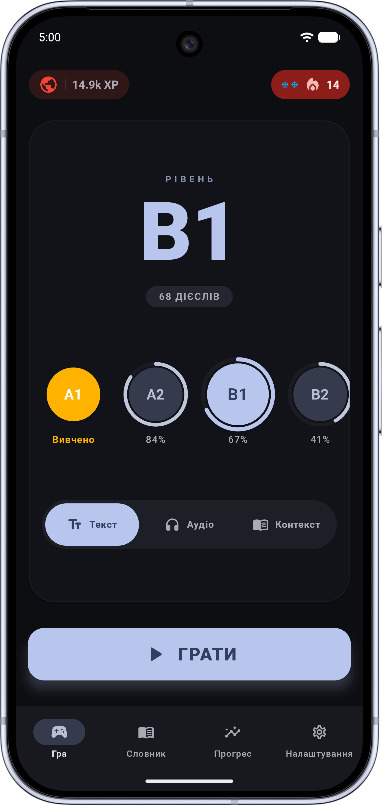
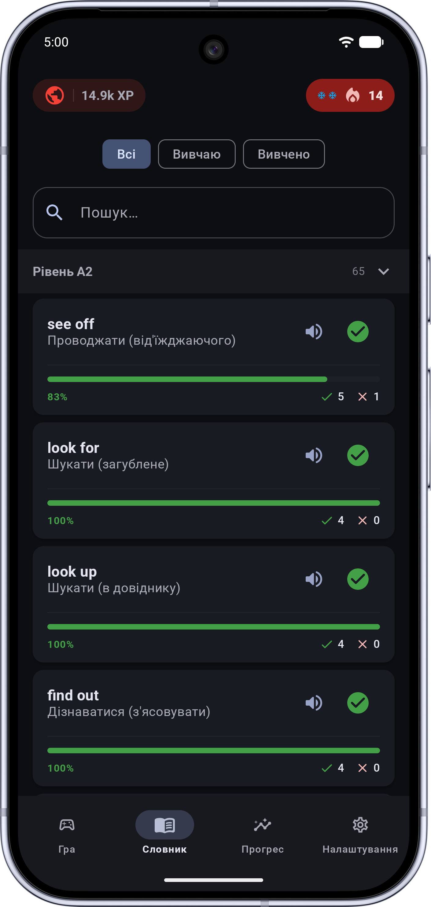
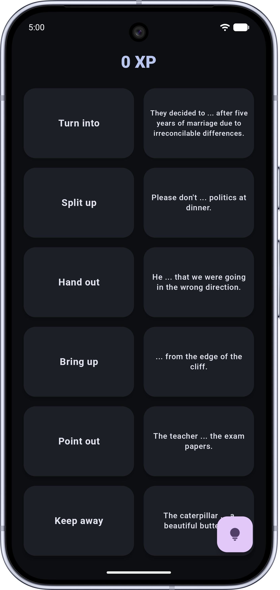
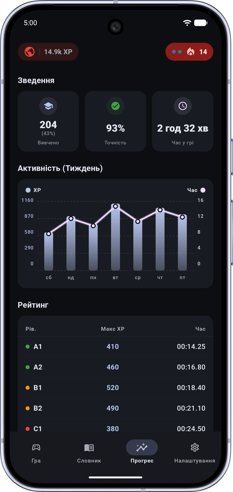

Опановуйте 470 фразових дієслів у контексті,
на слух та в динамічній грі.
Перестаньте зубрити сухі таблиці. Тренуйтеся у трьох ігрових режимах — Значення, Аудіо та Контекст, опрацьовуйте помилки у спецрежимі FOCUS, відкривайте нові рівні від A1 до C2 та тримайте щоденний темп із системою Streak і рангів.

Очікується скріншот:assets/phrasal-verbs/screen-main-uk.png
Чому звичайне заучування фразових дієслів провалюється
Одне дієслово може мати десятки відтінків залежно від частки та ситуації. Без практики в контексті та на слух мозок швидко їх плутає.
- • Плутанина в частках: легко переплутати give up, give in та give away, коли вони вирвані з живого речення.
- • Мовний бар'єр на слух: ви впізнаєте дієслово очима в тексті, але губитеся, коли чуєте його у швидкій розмові.
- • Повторення одних і тих самих помилок: складні дієслова губляться у загальному списку й ніколи не закріплюються до автоматизму.
- • 3 режими гри (Текст, Аудіо, Контекст): поєднуйте пари карток за перекладом, сприймайте дієслова виключно на слух (TTS) або підставляйте їх у речення з пропуском.
- • Розумний режим FOCUS: алгоритм автоматично збирає дієслова, в яких ви помилялися, у спеціальну «Зону росту» для точкового відпрацювання.
- • Гейміфікація, ранги та Streak: заробляйте XP за комбо і швидкість, відкривайте нові модифікатори в магазині за очки та захищайте серію днів Заморозкою.
Все для впевненого запам'ятовування
Три режими тренувань
Грайте у класичному текстовому режимі, прокачуйте сприйняття на слух в Аудіо-режимі або тренуйте чуття мови в режимі «У контексті», підбираючи пропущене дієслово у реченні.
Режим FOCUS (Робота над помилками)
Жодна помилка не залишиться без уваги. Режим FOCUS формує персональні раунди з ваших найважчих дієслів, перетворюючи слабкі місця на впевнені знання.
Ранги, XP та внутрішній магазин
Отримуйте бонуси за серії без помилок та швидкість, підвищуйте ранг від Новачка до Легенди й витрачайте зароблені XP на Заморозку стріка або складне поле на 8 пар.
Розумний словник та озвучка TTS
Усі 470 дієслів (A1–C2) зі зручним пошуком, фільтрами за прогресом, налаштуванням голосу та швидкості вимови, а також миттєвою підказкою по довгому натисканню на картку в грі.
Детальна статистика й хмарний бекап
Відстежуйте графік активності за тиждень, точність відповідей, час навчання та рекорди по кожному рівню. Розумна синхронізація надійно об'єднує прогрес між пристроями.
100% Офлайн та повага до приватності
Вся база дієслів працює без інтернету в дорозі чи під час відключень. Жодних зайвих дозволів та можливість повного видалення облікового запису прямо в налаштуваннях.
Інтуїтивний навчальний процес
Зручне ігрове лобі з вибором рівня та режиму, динамічне поле карток і наочна аналітика прогресу.

screen-cards-uk.pngСловник та приклади
Словник, озвучка та живі приклади

screen-quiz-uk.pngІгровий раунд
Поєднання пар у режимах Текст, Аудіо й Контекст

screen-stats-uk.pngПрогрес і Streak
Статистика, рекорди та «Зона росту»
Часті запитання
Для якого рівня англійської підходить додаток і які мови підтримуються?
Тренажер охоплює всі рівні CEFR — від базового Elementary (A1, A2) та Intermediate (B1, B2) до просунутого Advanced і Proficiency (C1, C2), а також має загальний режим MIX і режим роботи над помилками FOCUS. Додаток підтримує 10 мов перекладу та інтерфейсу (українська, англійська, польська, чеська, іспанська, французька, італійська, португальська, грецька, угорська).
Чи потрібен постійний інтернет для тренувань?
Ні. Вся база з 470 фразових дієслів, приклади, переклади та ігрові режими працюють повністю офлайн. Інтернет потрібен лише за бажанням увімкнути хмарну синхронізацію прогресу між пристроями.
Як керувати своїми даними або видалити акаунт?
Ви можете миттєво скинути прогрес або повністю видалити свій хмарний обліковий запис в один клік прямо в меню «Налаштування» всередині додатку, або залишити запит на сторінці Видалення даних.
Почніть вільно розуміти фразові дієслова
Встановіть Get It! безкоштовно та почніть свій щоденний навчальний ланцюжок вже сьогодні.